Nous transformons les contraintes de sauvegarde réglementaires en leviers de performance pour les territoires et la biodiversité.
ASCE Territoires est un bureau d'études et de conseils spécialisé dans la gestion intégrée des risques environnementaux et sociaux.
Nous accompagnons les porteurs de projets dans la sécurisation de leurs investissements en garantissant une conformité stricte aux standards nationaux et internationaux (SFI).
Accompagner les Aménagements du Territoire en offrant un service professionnel de haute qualité dans le cadre de la Gestion Environnementale et Sociale.
Devenir une référence nationale de qualité et de fiabilité, en parfaite conformité avec la vision moderne du développement durable.
Nous garantissons la compétence éprouvée de nos experts, appuyée en permanence par un équipement technique de pointe.
Proposer une expertise indépendante aux organismes internationaux pour co-développer des réponses scientifiques, techniques et économiques réalistes.
Nous combinons une ingénierie technique de haut niveau et une maîtrise rigoureuse des exigences réglementaires sur l'ensemble du cycle de vie de vos projets complexes.
Conception de méthodologies d'enquêtes, traitement et analyse approfondie de données statistiques appliquées à la recherche et à l'évaluation de programmes.
Interprétation avancée d'images satellites de haute précision (QuickBird, Ikonos, SPOT, Landsat) sous environnements spécialisés.
Modélisation numérique de terrain (MNT) et déploiement structuré de SIG passifs et actifs sous les logiciels ArcView, ArcGIS et MapInfo.
Nos équipes interviennent de manière transversale sur trois grands secteurs stratégiques :
Supervision E&S de chantiers routiers et de grands ouvrages de génie civil. Nous assurons le déploiement opérationnel des PGES sur le terrain, le suivi strict des indicateurs de performance et la maîtrise optimale des risques de chantier.
Audits de conformité et gestion des impacts pour les projets extractifs et d'électrification. Nous réalisons des audits de diligence raisonnable (due diligence) et des revues de conformité alignées sur les plus hauts standards internationaux.
Aménagement territorial et préservation/conservation de la biodiversité. Nous concevons des plans de gestion pour les zones écologiquement sensibles et sécurisons l'adhésion fine des projets auprès des populations riveraines.
Un partenaire stratégique pour sécuriser, fiabiliser et valoriser durablement vos investissements.
Intégration éco-sociale
Une expertise transversale unique capable de concilier parfaitement la préservation des composantes de l'environnement et la gestion des dynamiques sociales complexes.
Digitalisation et Agilité
Des technologies numériques au service d'un reporting E&S en temps réel, entièrement optimisé pour le pilotage stratégique des Unités de Gestion de Projets (UGP).
Conformité Standards Internationaux
Une parfaite maîtrise des exigences, réglementations et politiques opérationnelles rigoureuses des principaux bailleurs de fonds internationaux (notamment la SFI).
Découvrez nos réalisations dans les domaines de l'ingénierie et de l'environnement.
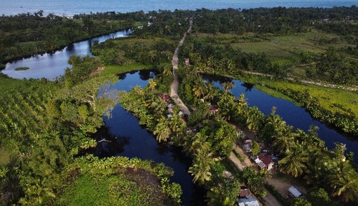
Zone Humide Sensible
Suivi environnemental des écosystèmes aquatiques et riverains.
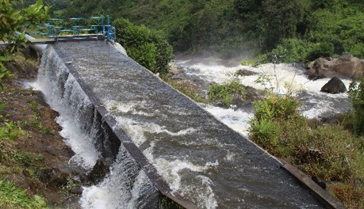
Ouvrage Hydraulique
Suivi environnemental des infrastructures et de leur intégration au milieu naturel.
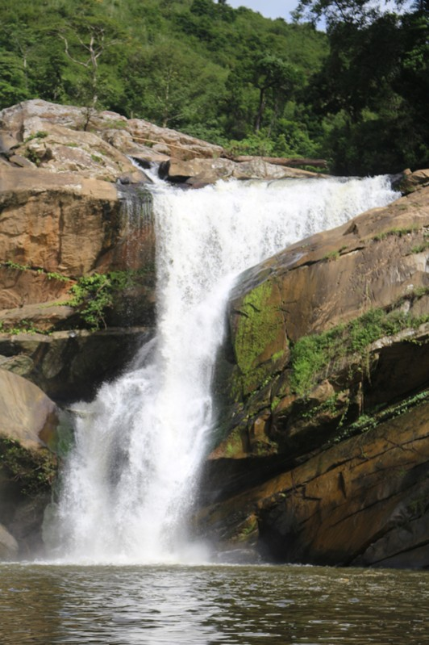
Ressource en Eau Naturelle
Préservation des cours d'eau et des milieux naturels sensibles.
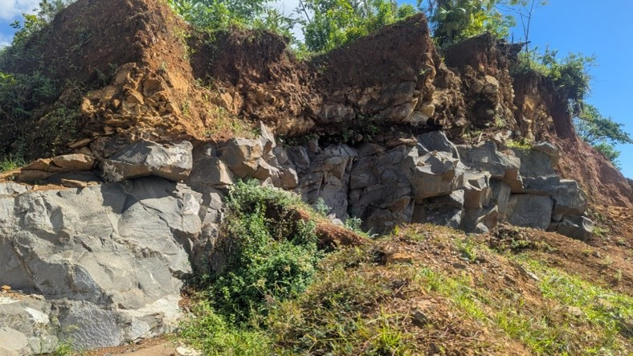
Étude Géotechnique
Diagnostic des risques d'érosion et suivi environnemental des talus.
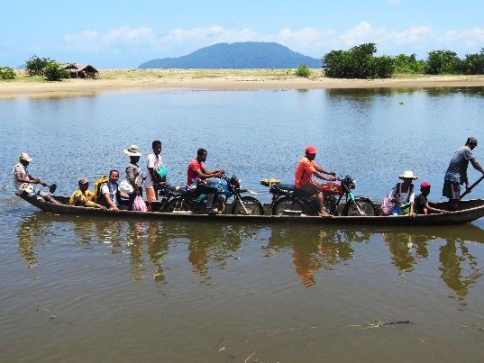
Mobilité des Populations Riveraines
Diagnostic territorial et enquêtes socio-économiques de terrain.
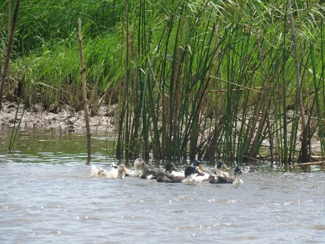
Biodiversité Aquatique
Observation de la faune et suivi des écosystèmes humides.
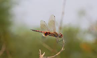
Faune Entomologique
Relevés de biodiversité sur les sites d'étude.
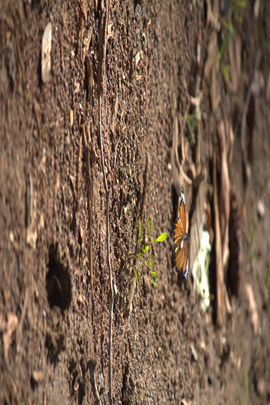
Site Industriel & Carrière
Audit de conformité environnementale sur site extractif.
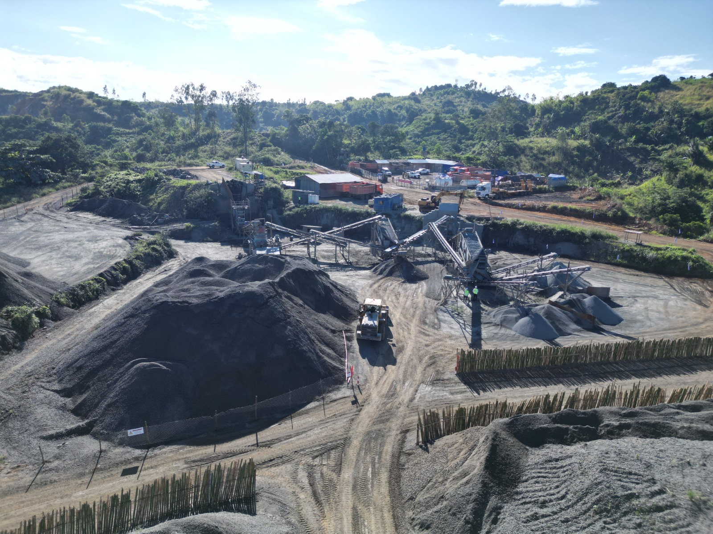
Observation Naturaliste
Relevés de terrain sur la biodiversité locale.
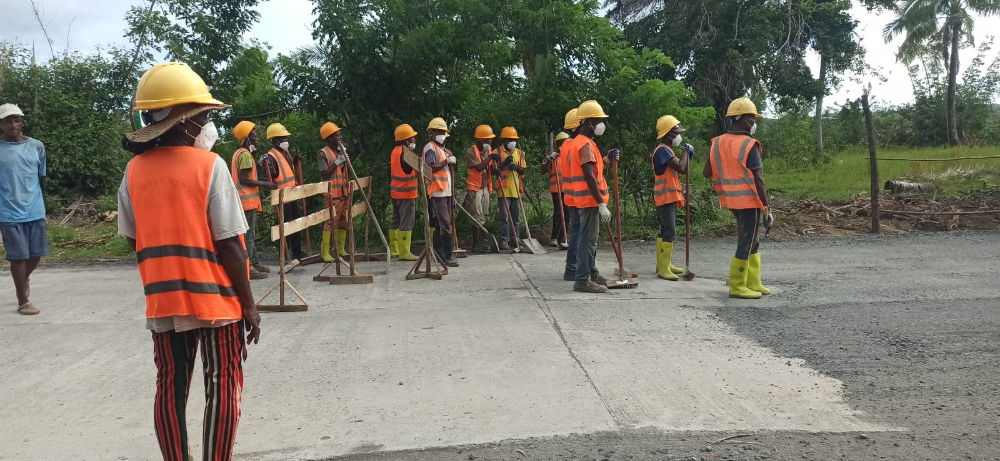
Supervision de Chantier
Suivi des équipes et des mesures de sécurité sur site.
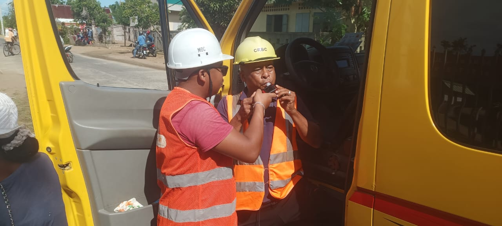
Contrôle de Sécurité
Vérification des mesures de sécurité et de conformité sur chantier.
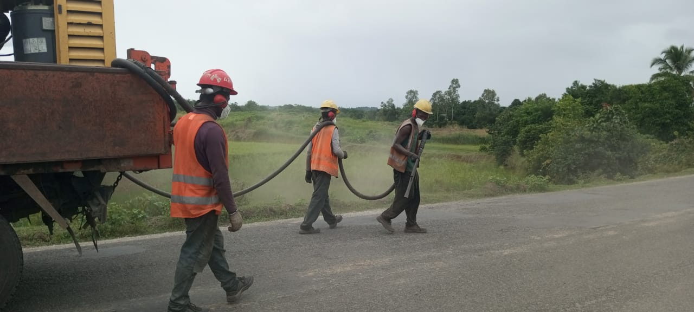
Contrôle Environnemental de Chantier
Application de mesures d'atténuation des nuisances (abattage de poussières).
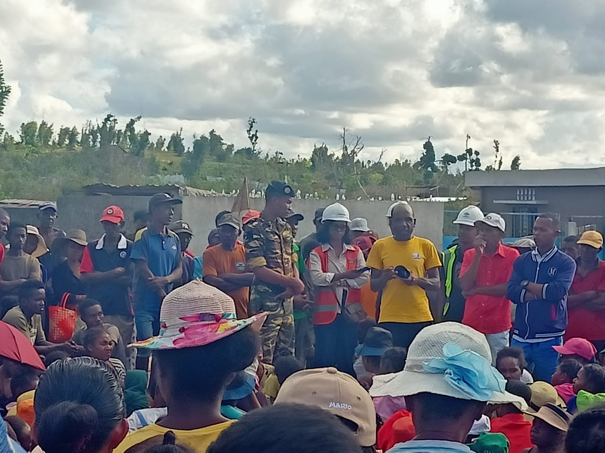
Consultation Communautaire
Réunion d'information et de dialogue avec les populations locales.
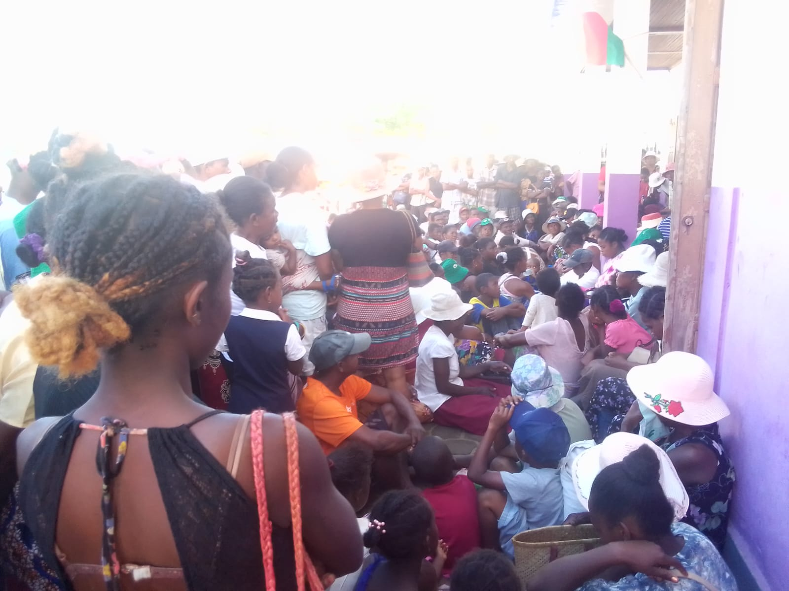
Engagement Communautaire
Séance de sensibilisation et d'échange avec les communautés riveraines.
Sécurisez vos investissements grâce à notre expertise en analyses environnementales et sociales.
Vous êtes un donneur d'ordre ou un organisme de développement international ? Sollicitez notre expertise indépendante pour vos études d'impact, audits E&S ou analyses géomatiques. Pour plus d'informations, veuillez nous contacter s'il vous plaît.
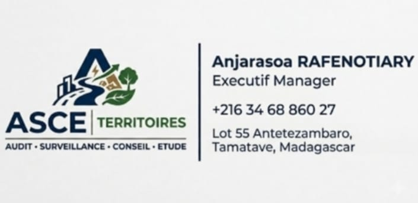
Disponibilité : Lundi au Vendredi (Heures de bureau)